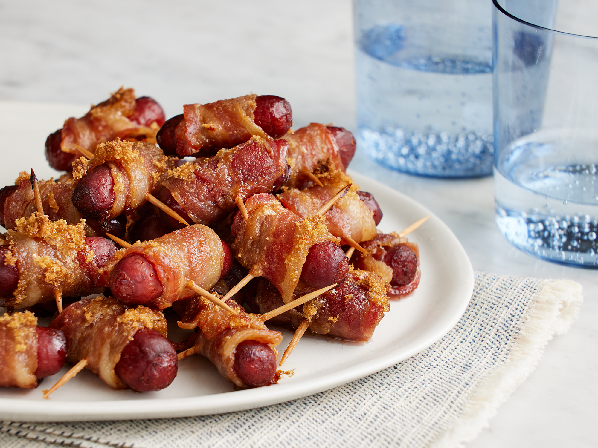

Bacon Wrapped Smokies

- 1 pound sliced bacon, cut into thirds
- 1 (14 ounce) package beef cocktail wieners
- toothpicks
- 1¾ cup brown sugar, or to taste
- Gather all ingredients.
- Preheat the oven to 325 degrees F (165 degrees C).
Line a large, rimmed baking sheet with parchment paper or aluminum foil.
- Wrap each cocktail wiener with a piece of bacon; secure with a toothpick.
Place bacon-wrapped wieners on the prepared baking sheet.
- Evenly sprinkle brown sugar over the tops of the bacon-wrapped wieners.
- Bake in the preheated oven until bacon is crisp and sugar is bubbly, about 40 minutes.
- Serve immediately, or place in a slow cooker set on Low to keep warm.